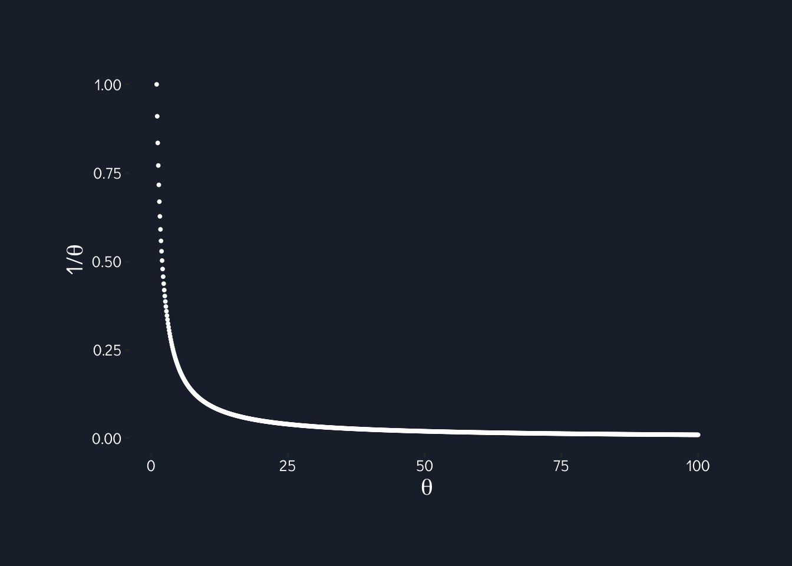
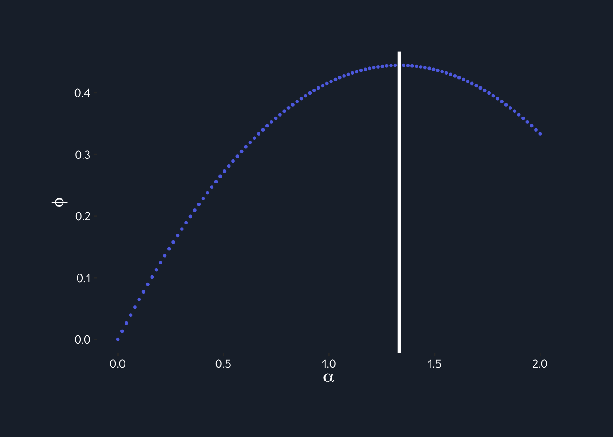
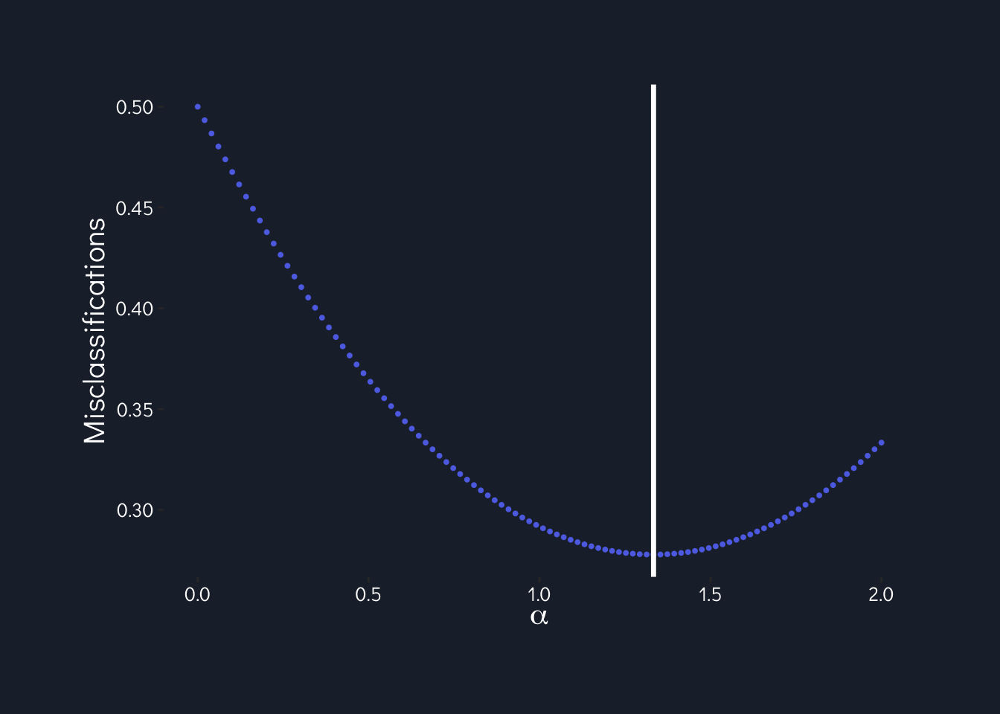

knitr::opts_chunk$set(echo = T, message = F, warning = F)# DO THESE FIRST BEFORE LOADING RETICULATE PKG
# create a new environment
#reticulate::conda_create("hw1")
# install numpy
#reticulate::conda_install("hw1", "numpy")
# reticulate::conda_install("hw1", "scipy")
reticulate::use_condaenv("hw1")library(tidyverse)
library(reticulate) # to use Python
# Plotting aesthetics
loaded_font <- 'Didact Gothic'
text_color <- 'white'
# Hex codes
hex_purple <- "#5E72E4" #primary
hex_blue_lt <- "#5DCEF0" #info
hex_green <- "#63CF89" #success
hex_pink <- "#EA445B" #danger
hex_orange <- "#EC603E" #warning
hex_blue_dk <- "#172B4D" #default
hex_grey <- "#51535e"
hex_blue_deep <- "#0f151c"
proj_theme <- theme(plot.background = element_rect(fill = "#1e2936", color = "transparent"),
plot.margin = margin(t = "1.5", r = "1.5", b = "1.5", l = "1.5", unit = "cm"),
panel.background = element_rect(fill = "#1e2936"),
panel.grid.major = element_blank(),
panel.grid.minor = element_blank(),
plot.title = element_text(family = loaded_font, color = text_color, hjust = 0.5, face = "bold", size = 30),
plot.caption = element_text(family = loaded_font, color = text_color, size = 9),
axis.title = element_text(family = loaded_font, size = 15, color = text_color),
axis.text = element_text(family = loaded_font, color = text_color, size = 10),
strip.background = element_rect(fill = "#0f151c"),
strip.text = element_text(color = "#a1aab5", family = loaded_font, face = "bold", size = 18),
legend.background = element_rect(fill = "transparent"),
legend.title = element_text(family = loaded_font, color = text_color),
legend.text = element_text(family = loaded_font, color = text_color),
legend.position = "bottom",
legend.key = element_rect(fill = NA))Find the Maximum Likelihood Estimation (MLE) of \(\theta\) in the following probabilistic density functions. In each case, consider a random sample of size n. Show your calculation.
\(f(x|\theta) = x e^{−x2}, x \geq 0\)
\[L(\theta|x) = \prod p(x_i | \theta)\] Take the log: \[ = \sum log p(x_i | \theta)\] Plug in the likelihood: \[ = \sum log \left (\frac{x}{\theta^2}e^{\frac{-x^2}{2\theta^2}} \right) \] Distribute the logs: \[ = \sum(\log\frac{x}{\theta^2} - \frac{x^2}{2\theta^2})\] Distribute the summation: \[ = \sum \log\frac{x}{\theta^2} - \frac{\sum x^2}{2\theta^2}\] Use log rules to rewrite: \[ = \sum logx - \sum log\theta^2 - \frac{\sum x^2}{2\theta^2}\]
Now, we take the derivative w.r.t. \(\theta\): \[\frac{\partial}{\partial \theta} = 0 - \frac{2N}{\theta} - - \frac{\sum x^2}{\theta^3}\] \[ = -\frac{2N}{\theta} + \frac{\sum x^2}{\theta^3}\]
Set equal to zero to maximize: \[ 0 = -\frac{2N}{\theta} + \frac{\sum x^2}{\theta^3} \] \[ \frac{2N}{\theta} = \frac{\sum x^2}{\theta^3}\] \[2N\theta^2 = \sum x^2\] \[ \hat{\theta} = \sqrt{ \frac{\sum x^2}{2N} }\]
\(f(x| \theta, \alpha, \beta) = \alpha\theta^{-\alpha \beta} x^{\beta} e^{-(\frac{x}{\theta})^{\beta}}\)
\(f(x | \theta) = \frac{1}{\theta}, 0 \leq x \leq \theta, \theta > 0\)
This function has no minimum or maximum, as it is monotonically decreasing.
To illustrate, we can also draw (or plot) the function:
import numpy as np
theta = np.linspace(1, 100, 1000)
ll_1c_results = []
for i in theta:
ll_1c_results.append(1/i)ll_1c <- as.matrix(py$ll_1c_results)
ggplot() +
aes(seq(1, 100, length.out = 1000), as.numeric(ll_1c[,1])) +
geom_point(color = "white", size = 0.7) +
labs(x = expression(theta),
y = expression(paste("1/", theta))) +
proj_theme
We want to build a pattern classifier with continuous attribute using Bayes’ Theorem. The object to be classified has one feature, x in the range 0 \(\leq\) x < 6.
Assuming equal priors, P (C1) = P (C2) = 0.5, classify an object with the attribute value x = 2.5.
To classify, I’ll determine the value of the discriminant for each class for this value of x. Then I’ll classify the observation as the class with the highest discriminant.
Class 1: \[ P(x | C_1) \times P(C_1) = \frac{1}{6} \times \frac{1}{2} = \frac{1}{12} = 0.08\bar3\] Class 2:
\[ P(x | C_2) \times P(C_2) = \frac{1}{4}(2.5 - 1) \times 0.5\] \[ = \frac{1}{4}(1.5) \times \frac{1}{2} = \frac{1}{4} \times \frac{3}{2} \times \frac{1}{2} = \frac{3}{16} = 0.1875\]
\(p(C_2 | x) > p(C_1 | x) \therefore\) I’ll classify as \(C_2\).
Assuming unequal priors, P(C1) = 0.7,P(C2) = 0.3, classify an object with the attribute value x = 4.
Class 1: \[p(x | C_1) \times p(C_1) = \frac{1}{6} \times 0.7 = 0.11\bar6\]
Class 2: \[p(x | C_2) \times p(C_2) = \frac{1}{4}(5-4) \times 0.3\] \[ = \frac{1}{4} \times 0.3 = 0.075\]
\(p(C_1 | x) > p(C_2 | x) \therefore\) I’ll classify as \(C_1\).
Consider a decision function \(\phi(x)\) of the form \(\phi(x)\) = (|x − 3|) − \(\alpha\) with one free parameter \(\alpha\) in the range 0 ≤ \(\alpha\) ≤ 2. You classify a given input x as class 2 if and only if \(\phi\)(x) < 0, or equivalently 3 - \(\alpha\) < x < 3 + \(\alpha\), otherwise you choose x as class 1. Assume equal priors, P(C1) = P(C2) = 0.5, what is the optimal decision boundary - that is, what is the value of \(\alpha\) which minimizes the probability of misclassification? What is the resulting probability of misclassification with this optimal value for \(\alpha\)? (Hint: take advantage of the symmetry around x = 3.)
In order to minimize misclassification, we can use two separate methods and confirm that they match.
The first method just uses our intuition: to minimize misclassification, we just need to minimize the overlap of the pdf’s of the two classes, or essentially, maximize the difference between the two:
\[argmax(\int P(x | C_1) - \int P(x | C_2))\]
from scipy.integrate import quad
def c1(x):
if x >= 0 and x < 6:
return 1/6
else:
return 0
def c2(x):
if x >= 1 and x < 3:
return 0.25 * (x - 1)
elif x >= 3 and x < 5:
return 0.25 * (5 - x)
else:
return 0
def phi(alpha):
lwr = 3 - alpha
upr = 3 + alpha
c2_area = quad(c2, a = lwr, b = upr)[0]
c1_area = quad(c1, a = lwr, b = upr)[0]
return c2_area - c1_area
phi_result = []
alpha_vals = np.linspace(0, 2, 100)
for i in alpha_vals:
phi_result.append(phi(i))
max_area = alpha_vals[np.array(phi_result).argmax()]ggplot() +
aes(as.numeric(py$alpha_vals), as.numeric(py$phi_result)) +
geom_point(size = 0.7, color = hex_purple) +
geom_vline(xintercept = py$max_area, size = 1.4, color = 'white') +
labs(x = expression(alpha),
y = expression(phi)) +
proj_theme
Our misclassification rate is minimized at \(\alpha = \frac{4}{3}\), or when \(\frac{5}{3} < x < \frac{14}{3}\).
c2_misclass = quad(c2, a = 1, b = 5/3)[0] + quad(c2, a = 13/3, b = 5)[0]
pc2_misclass = c2_misclass * 0.5 # 0.5 prior probpy$pc2_misclass## [1] 0.05555556There’s about an 5.5% probability of \(P(C_1 | C_2)\) misclassification (predicting as \(C_1\) and it was actually \(C_2\)) using this \(\alpha\).
pc1_misclass = quad(c1, a = 5/3, b = 15/3)[0] * 0.5 # 0.5 prior probpy$pc1_misclass## [1] 0.2777778There’s a 27.8 probability of \(P(C_2 | C_1)\) misclassification using this \(\alpha\). Altogether, there’s a 33% probability of misclassification using this \(\alpha\).
def p_misclass(alpha):
lwr = 3 - alpha
upr = 3 + alpha
c1_misclass = quad(c1, a = lwr, b = upr)[0]
c2_misclass = quad(c2, a = 0, b = lwr)[0] + quad(c2, a = upr, b = 6)[0]
return c1_misclass + c2_misclass
misclass_result = []
alpha_vals = np.linspace(0, 2, 100)
for i in alpha_vals:
misclass_result.append(p_misclass(i))
min_misclass = alpha_vals[np.array(misclass_result).argmin()]What is our minimum misclassification rate?
np.array(misclass_result).argmin() * 0.5 # x prior## 33.0ggplot() +
aes(as.numeric(py$alpha_vals), as.numeric(py$misclass_result) * 0.5) +
geom_point(size = 0.7, color = hex_purple) +
geom_vline(xintercept = py$min_misclass, color = 'white', size = 1.2) +
labs(x = expression(alpha),
y = "Misclassifications") +
proj_theme